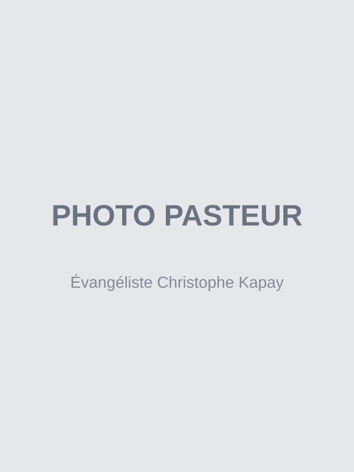

Qui sommes-nous
Une famille dans la foi, ancrée dans la Parole et ouverte à tous.
Notre histoire
L'Église La Puissance Bruxelles est la branche officielle de l'Église La Puissance, fondée à Kinshasa en République démocratique du Congo. Implantée à Bruxelles depuis [année à compléter], elle rassemble une communauté de fidèles issus principalement de la diaspora congolaise, mais ouverte à toutes les origines et à tous les horizons.
Notre assemblée est née d'une vision claire : porter la lumière de l'Évangile au cœur de l'Europe, en conservant les racines spirituelles et culturelles qui ont fait la force de notre église-mère à Kinshasa.
Aujourd'hui, nous sommes une communauté vivante, en croissance, où chacun trouve sa place quelle que soit son parcours.
Ce que nous croyons
Nous sommes une église évangélique ancrée dans la Bible. Nos convictions fondamentales s'articulent autour de plusieurs piliers :
- L'autorité des Écritures — La Bible est la Parole inspirée de Dieu, notre seule règle de foi et de pratique.
- Le salut par la foi — Nous croyons au salut par la grâce, au travers de la foi en Jésus-Christ.
- La puissance de la prière — La prière est au centre de notre vie communautaire et personnelle.
- L'unité dans la diversité — Nous accueillons toutes les nations, tous les âges, tous les parcours.
- La mission — Nous sommes appelés à partager l'Évangile par nos vies et nos actions.

Évangéliste Christophe Kapay, Pasteur de l'église La Puissance Bruxelles
L'Évangéliste Christophe Kapay
Présentez ici, en quelques phrases sobres, le parcours, l'appel et la vision de l'Évangéliste Christophe Kapay. Privilégiez un portrait humain et vérifiable plutôt que des superlatifs. (Texte à compléter.)
Le pasteur Christophe Kapay dirige l'église avec une vision claire : bâtir une communauté solide, ancrée dans la Parole, et ouverte à ceux qui cherchent Dieu.
Contacter le pasteurUne question ?
Nous sommes là.
Écrire sur WhatsApp
Posez-nous une question — nous répondrons avec plaisir